The ToolControl and ToolButton Objects
The ToolControl object is normally used in conjunction with ToolButtons, although it may also act as a parent for other objects, including a MenuBar.
A ToolButton may display a Caption and an Image, although both are optional. Images for individual ToolButtons are not defined one-by-one, but instead are defined by an ImageList which contains a set of bitmaps or icons.
The ImageListObj property of the ToolControl specifies the name of one or more ImageList objects to be used. The ImageIndex properties of each of the ToolButtons specifies which of the images in each ImageList object apply to which of the ToolButtons.
Standard Bitmap Resources
Typically, you will want your ToolControls to provide standard Windows buttons and the easiest way to achieve this is to utilise the standard Windows bitmaps that are contained in COMCTL32.DLL. There are three main sets of bitmaps, each of which is provided in two sizes, small (16x16) and large (24 x 24).
Resource number 120 (IDB_STD_SMALL_COLOR) and 121 (IDB_STD_LARGE_COLOR) contain the following set of assorted bitmap images.
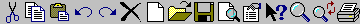
Resource number 124 (IDB_VIEW_SMALL_COLOR) and 125 (IDB_VIEW_LARGE_COLOR) contain a set of bitmaps relating to different views of information. These are used, for example in the Windows Explorer tool bar
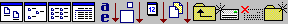
Resource number 130 (IDB_HIST_SMALL_COLOR) and 131 (IDB_HIST_LARGE_COLOR) contain another useful set of bitmaps
COMCTL32.DLL also contains individual bitmaps in resources 132-134.
Dyalog Bitmap Resources
Another three sets of useful bitmaps are to be found in the DyaRes DLL file. These bitmaps are used in the Dyalog APL/W Session tool buttons.
Information
If you include these bitmaps in a run-time application, you will have to ship DyaRes DLL with it.
The normal set of bitmaps associated with the Session buttons may be created using the statement:
'bm'⎕WC'Bitmap' ('dyares180_64.dll' 'tb_normal')The bitmaps used when the buttons are highlighted may be created using the statement.
'bm'⎕WC'Bitmap' ('dyares180_64.dll' 'tb_hot')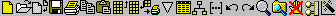
The bitmaps used when the buttons are inactive may be created using the statement
'bm'⎕WC'Bitmap' ('dyares180_64.dll' 'tb_inactive')In the Dyalog Session, if Native Look and Feel is enabled, these bitmaps are overridden by a single set of images designed to operate with the user's chosen theme and Visual Styles.
Creating ImageLists for ToolButtons
You may use up to three ImageList objects to represent ToolButton images. These will be used to specify the pictures of the ToolButton objects in their normal, highlighted (sometimes termed hot) and inactive states respectively.
The set of images in each ImageList is then defined by creating unnamed Bitmap or Icon objects as children.
When creating an ImageList, it is a good idea to set its MapCols property to 1. This means that standard button colours used in the bitmaps will automatically be adjusted to take the user's colour preferences into account.
When you create each ToolButton you specify its ImageIndex property, selecting up to three pictures (normal, highlighted and inactive) to be displayed on the button.
If you specify only a single ImageList, the picture on the ToolButton will be the same in all three cases. However, the appearance of the buttons themselves change when the button is highlighted or pressed, and in many situations this may be sufficient behaviour.
The following example illustrates how a simple ToolControl can be constructed using standard Windows bitmaps. The Masked property of the ImageList is set to 0; this is necessary if the ImageList is to contain bitmaps, as opposed to icons. Secondly, because the bitmaps are in this case size 16 x 16, it is unnecessary to specify the Size property of the ImageList which is, by default, also 16 x 16.
'F'⎕WC'Form' 'ToolControl'('Size' 10 40)
'F.TB'⎕WC'ToolControl'
'F.TB.IL'⎕WC'ImageList'('Masked' 0) ('MapCols' 1)
'F.TB.IL.'⎕WC'Bitmap'('ComCtl32' 120)⍝ STD_SMALL
'F.TB'⎕WS'ImageListObj' 'F.TB.IL'
'F.TB.B1'⎕WC'ToolButton' 'New'('ImageIndex' 7)
'F.TB.B2'⎕WC'ToolButton' 'Open'('ImageIndex' 8)
'F.TB.B3'⎕WC'ToolButton' 'Save'('ImageIndex' 9)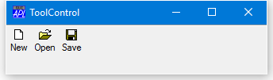
The Style Property
The overall appearance of the ToolButton objects displayed by the ToolControl is defined by the Style property of the ToolControl itself, rather than by properties of individual ToolButtons.
The Style property can only be set when the ToolControl is created using ⎕WC and cannot subsequently be changed using ⎕WS.
Style may be 'FlatButtons', 'Buttons', 'List' or 'FlatList'. The default Style is of a ToolControl is 'FlatButtons', as is the first example above. The following examples illustrate the other three styles:
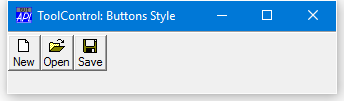
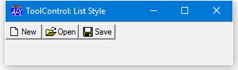
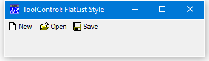
The Divider Property
You will notice that, in the above examples, there is a thin groove drawn above the ToolControl. The presence or absence of this groove is controlled by the Divider property whose default is 1. The following picture illustrates the effect of setting Divider to 0.
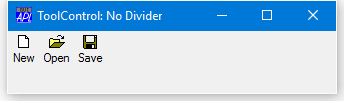
The MultiLine Property
The MultiLine property specifies whether or not ToolButtons (and other child controls) are arranged in several rows (or columns) when there are more than would otherwise fit.
If MultiLine is 0 (the default), the ToolControl object clips its children and the user must resize the Form to bring more objects into view.
You can change MultiLine dynamically, using ⎕WS:
'F'⎕WC'Form' 'ToolControl: MultiLine 0'
'F.TB'⎕WC'ToolControl'('Style' 'List')
'F.TB.IL'⎕WC'ImageList'('Masked' 0)('Size' 24 24)
'F.TB.IL.'⎕WC'Bitmap'('ComCtl32' 121)⍝ STD_LARGE
'F.TB'⎕WS'ImageListObj' 'F.TB.IL'
'F.TB.B1'⎕WC'ToolButton' 'Cut'('ImageIndex' 1)
'F.TB.B2'⎕WC'ToolButton' 'Copy'('ImageIndex' 2)
'F.TB.B3'⎕WC'ToolButton' 'Paste'('ImageIndex' 3)
'F.TB.B4'⎕WC'ToolButton' 'Undo'('ImageIndex' 4)
'F.TB.B5'⎕WC'ToolButton' 'Redo'('ImageIndex' 5)
'F.TB.B6'⎕WC'ToolButton' 'Delete'('ImageIndex' 6)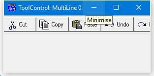
If we set MultiLine to 1, the ToolButtons are instead displayed in several rows:
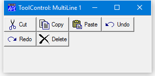
The Transparent Property
The Transparent property (default 0) specifies whether or not the ToolControl is transparent. Transparent must be set when the object is created using ⎕WC and cannot subsequently be changed using ⎕WS.
If a ToolControl is created with Transparent set to 1, the visual effect is as if the ToolButtons (and other controls) were drawn directly on the parent Form as shown below.
'F'⎕WC'Form' 'ToolControl: Transparent 1)'
ROOT←'C:\Program Files\Dyalog\Dyalog APL 13.1 Unicode\'
'F.BM'⎕WC'Bitmap'(ROOT,'\WS\BUBBLES')
'F'⎕WS'Picture' 'F.BM' 1
'F.TB'⎕WC'ToolControl'('Style' 'Buttons')('Transparent'1)
'F.TB.IL'⎕WC'ImageList'('Masked' 0)('Size' 24 24)
'F.TB.IL.'⎕WC'Bitmap'('ComCtl32' 121)⍝ STD_LARGE
'F.TB'⎕WS'ImageListObj' 'F.TB.IL'
'F.TB.B1'⎕WC'ToolButton' 'New'('ImageIndex' 7)
'F.TB.B2'⎕WC'ToolButton' 'Open'('ImageIndex' 8)
'F.TB.B3'⎕WC'ToolButton' 'Save'('ImageIndex' 9)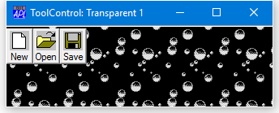
Radio buttons, Check buttons and Separators
The Style property of a ToolButton may be 'Push', 'Check', 'Radio', 'Separator' or 'DropDown'.
Push buttons (the default) are used to generate actions and pop in and out when clicked.
Radio and Check buttons are used to select options and have two states, normal (out) and selected (in). Their State property is 0 when the button is in its normal (unselected state) or 1 when it is selected.
A group of adjacent ToolButtons with Style 'Radio' defines a set in which only one of the ToolButtons may be selected at any one time. The act of selecting one will automatically deselect any other. A group of Radio buttons must be separated from Check buttons or other groups of Radio buttons by ToolButtons of another Style.
Separator buttons are a special case as they have no Caption or picture, but appear as a thin vertical grooves that are used only to separate groups of buttons.
The following example illustrates how two groups of radio buttons are established by inserting a ToolButton with Style 'Separator' between them. This ToolControl could be used to control the appearance of a ListView object. The first group is used to select the view (Large Icon, Small Icon, List or Report), and the second is used to sort the items by Name, Size or Date. In the picture, the user has selected Small Icon View and Sort by Date.
'F'⎕WC'Form' 'ToolControl: Radio Buttons'
'F.TB'⎕WC'ToolControl'
'F.TB.IL'⎕WC'ImageList'('Masked' 0)
'F.TB.IL.'⎕WC'Bitmap'('ComCtl32' 124)⍝ VIEW_SMALL
'F.TB'⎕WS'ImageListObj' 'F.TB.IL'
'F.TB.B1'⎕WC'ToolButton' 'Large'('ImageIndex' 1)('Style' 'Radio')
'F.TB.B2'⎕WC'ToolButton' 'Small'('ImageIndex' 2)('Style' 'Radio')
'F.TB.B3'⎕WC'ToolButton' 'List'('ImageIndex' 3)('Style' 'Radio')
'F.TB.B4'⎕WC'ToolButton' 'Details'('ImageIndex' 4)('Style' 'Radio')
'F.TB.S1'⎕WC'ToolButton'('Style' 'Separator')
'F.TB.B5'⎕WC'ToolButton' 'Name'('ImageIndex' 5)('Style' 'Radio')
'F.TB.B6'⎕WC'ToolButton' 'Size'('ImageIndex' 6)('Style' 'Radio')
'F.TB.B7'⎕WC'ToolButton' 'Date'('ImageIndex' 7)('Style' 'Radio')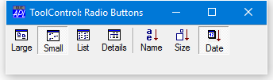
The appearance of the Separator ToolButton is less obvious when the ToolControl Style is Buttons or List, but the radio grouping effect is the same:
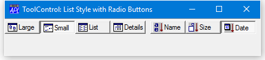
Drop-Down buttons
It is possible to define ToolButtons that display a drop-down menu from which the user may choose an option. This is done by creating a ToolButton with Style 'DropDown'.
A ToolButton with Style 'DropDown' has an associated popup Menu object which is named by its Popup property. There are two cases to consider.
If the ShowDropDown property of the parent ToolControl is 0, clicking the ToolButton causes the popup menu to appear. In this case, the ToolButton itself does not itself generate a Select event; you must rely on the user selecting a MenuItem to specify a particular action.
If the ShowDropDown property of the parent ToolControl is 1, clicking the dropdown button causes the popup menu to appear; clicking the ToolButton itself generates a Select event, but does not display the popup menu.
'F'⎕WC'Form' 'ToolControl: Dropdown Buttons'
'F.TB'⎕WC'ToolControl'('ShowDropDown' 1)
:With 'F.FMENU'⎕WC'Menu' ⍝ Popup File menu
'NEW'⎕WC'MenuItem' '&New'
'OPEN'⎕WC'MenuItem' '&Open'
'CLOSE'⎕WC'MenuItem' '&Close'
:EndWith
:With 'F.EMENU'⎕WC'Menu' ⍝ Popup Edit menu
'CUT'⎕WC'MenuItem' 'Cu&t'
'COPY'⎕WC'MenuItem' '&Copy'
'PASTE'⎕WC'MenuItem' '&Paste'
:EndWith
'F.TB.B1'⎕WC'ToolButton' 'File'('Style' 'DropDown')('Popup' 'F.FMENU')
'F.TB.B2'⎕WC'ToolButton' 'Edit'('Style' 'DropDown')('Popup' 'F.EMENU')
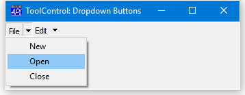
A MenuBar as the child of a ToolControl
As a special case, the ToolControl may contain a MenuBar as its only child. In this case, Dyalog APL/W causes the menu items to be drawn as buttons, even under Windows 95.
Although nothing is done to prevent it, the use of other objects in a ToolControl containing a MenuBar, is not supported.
'F'⎕WC'Form' 'ToolControl with MenuBar'
'F.TB'⎕WC'ToolControl'
:With 'F.TB.MB'⎕WC'MenuBar'
:With 'File'⎕WC'Menu' 'File'
'New'⎕WC'MenuItem' 'New'
'Open'⎕WC'MenuItem' 'Open'
'Close'⎕WC'MenuItem' 'Close'
:EndWith
:With 'Edit'⎕WC'Menu' 'Edit'
'Cut'⎕WC'MenuItem' 'Cut'
'Copy'⎕WC'MenuItem' 'Copy'
'Paste'⎕WC'MenuItem' 'Paste'
:EndWith
:EndWith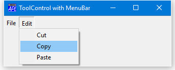
Providing User Customisation
It is common to allow the user to switch the appearance of a ToolControl dynamically. This may be done using a pop-up menu. In addition to providing a choice of styles, the user may switch the text captions on and off.
The ShowCaptions property specifies whether or not the captions of ToolButton objects are drawn. Its default value is 1 (draw captions).
ToolButtons drawn without captions occupy much less space and ShowCaptions provides a quick way to turn captions on/off for user customisation.
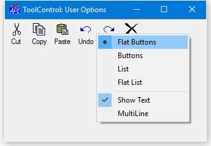
The following functions illustrate how this was achieved.
∇ Example
[1] 'F'⎕WC'Form' 'ToolControl: User Options'
[2] 'F.TB'⎕WC'ToolControl'
[3] 'F.TB'⎕WS'Event' 'MouseDown' 'TC_POPUP'
[4]
[5] 'F.TB.IL'⎕WC'ImageList'('Masked' 0)('Size' 24 24)
[6] 'F.TB.IL.'⎕WC'Bitmap'('ComCtl32' 121)⍝ STD_LARGE
[7] 'F.TB'⎕WS'ImageListObj' 'F.TB.IL'
[8]
[9] 'F.TB.B1'⎕WC'ToolButton' 'Cut'('ImageIndex' 1)
[10] 'F.TB.B2'⎕WC'ToolButton' 'Copy'('ImageIndex' 2)
[11] 'F.TB.B3'⎕WC'ToolButton' 'Paste'('ImageIndex' 3)
[12] 'F.TB.B4'⎕WC'ToolButton' 'Undo'('ImageIndex' 4)
[13] 'F.TB.B5'⎕WC'ToolButton' 'Redo'('ImageIndex' 5)
[14] 'F.TB.B6'⎕WC'ToolButton' 'Delete'('ImageIndex' 6)
∇
∇ TC_POPUP MSG;popup;TC;STYLE;SHOW;MULTI;OPTION
[1] ⍝ Popup menu on ToolControl
[2] :If (2≠5⊃MSG) ⍝ Right mouse button ?
[3] :Return
[4] :EndIf
[5]
[6] TC←'#.',⊃MSG
[7] STYLE SHOW MULTI←TC ⎕WG'Style' 'ShowCaptions'
'MultiLine'
[8]
[9] :With 'popup'⎕WC'Menu'
[10] 'FlatButtons'⎕WC'MenuItem' '&Flat Buttons'
('Style' 'Radio')
[11] 'Buttons'⎕WC'MenuItem' '&Buttons'
('Style' 'Radio')
[12] 'List'⎕WC'MenuItem' '&List'('Style' 'Radio')
[13] 'FlatList'⎕WC'MenuItem' 'Fla&t List'
('Style' 'Radio')
[14] STYLE ⎕WS'Checked' 1
[15] 'sep'⎕WC'Separator'
[16] 'ShowCaptions'⎕WC'MenuItem' '&Show Text'
('Checked'SHOW)
[17] 'MultiLine'⎕WC'MenuItem' '&MultiLine'
('Checked'MULTI)
[18]
[19] ('MenuItem'⎕WN'')⎕WS¨⊂'Event' 'Select' 1
[20]
[21] :If 0=⍴MSG←⎕DQ''
[22] :Return
[23] :EndIf
[24]
[25] :Select OPTION←⊃MSG
[26] :CaseList 'FlatButtons' 'Buttons' 'List'
'FlatList'
[27] TC ⎕WS'Style'OPTION
[28] :Else
[29] TC ⎕WS OPTION(~TC ⎕WG OPTION)
[30] :EndSelect
[31]
[32] :EndWith
∇